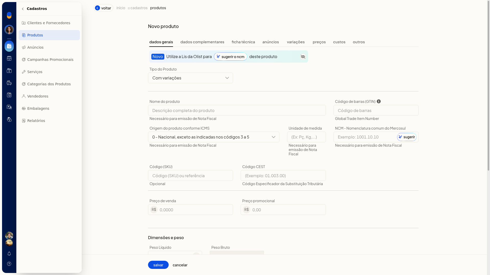

Definir quais dados podem ser diferentes entre as variações
No ERP da Olist, em Alterar regras, você escolhe quais dados podem ser diferentes entre as variações de um produto do tipo Com variações.
Importante
- A alteração vale para variações já existentes.
- Ajuste as regras antes de salvar o produto pai.
Instruções
-
Acesse Cadastros > Produtos.

-
Clique em Incluir produto.
-
Em Tipo do Produto, selecione Com variações.

-
Na aba Variações, clique em Alterar regras.
-
Marque o que pode ser diferente entre as variações. Na tela, estavam marcados NCM, Unidade, Embalagem e dimensões, Estoque mínimo e máximo, Descrição complementar e Tags. Estavam desmarcados GTIN/EAN, Preço de venda, Preço promocional, Peso e volumes e Localização.
-
Ajuste essas marcações antes de clicar em Salvar no produto pai. Se não quiser aplicar, cancele.